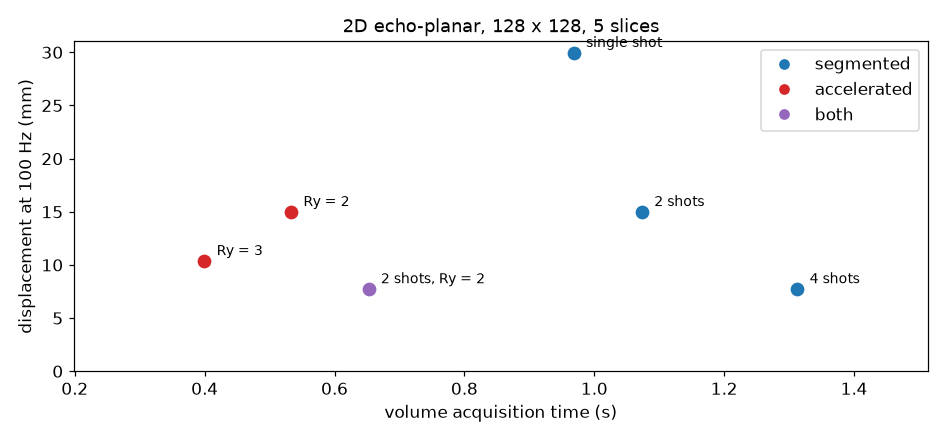
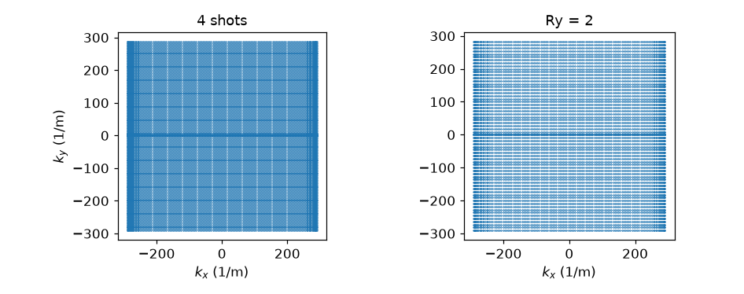
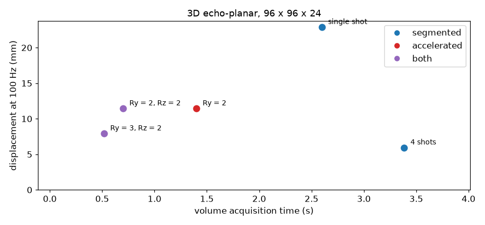

Note
Go to the end to download the full example code.
Echo train length, distortion and volume time#
An echo-planar train samples the whole phase-encode axis after one excitation, so off-resonance accumulates along that axis instead of across repetitions. A spin at offset \(\Delta f\) acquires phase \(2\pi \Delta f\, m\, \mathrm{esp}\) on echo \(m\), which is linear in \(k_y\) and therefore a displacement of
pixels in the reconstructed image, whatever k-space step the train takes. The echo train length is what the design controls: interleaving the lines over several shots and undersampling the phase encode both shorten it, and they differ in what else they change.
This example designs the configurations, reads the echo spacing and the train length back from each designed sequence, and places them on the plane of geometric distortion against volume acquisition time.
from pypulseqpp import sequences
#: Off-resonance the displacement is quoted at, of the order of what a
#: sinus-adjacent voxel sees at 3 T.
OFF_RESONANCE_HZ = 100.0
FOV = 220e-3
MATRIX = 128
Two-dimensional configurations#
Each configuration is designed at the same matrix, field of view and slice
count, so the only quantities that differ are the shot count and the in-plane
acceleration. tr=None asks for the shortest repetition the design admits,
which makes the reported duration a property of the sampling rather than a
prescription.
def design_2d(n_shots, ry):
"""A five-slice echo-planar sequence at the common geometry."""
return sequences.epi2D_sequence(
fov_x=FOV,
fov_y=FOV,
n_x=MATRIX,
n_y=MATRIX,
n_slices=5,
slice_thickness=4e-3,
n_shots=n_shots,
ry=ry,
fat_saturation=True,
tr=None,
n_dummy=0,
)
designs_2d = {
"single shot": design_2d(1, 1),
"2 shots": design_2d(2, 1),
"4 shots": design_2d(4, 1),
"Ry = 2": design_2d(1, 2),
"Ry = 3": design_2d(1, 3),
"2 shots, Ry = 2": design_2d(2, 2),
}
The echo spacing and the train length are written into the sequence by the design, so the displacement is read off the sequence rather than recomputed from the parameters that were asked for.
def measure(designs, matrix):
"""Echo spacing, train length, displacement and duration of each design."""
rows = []
for label, seq in designs.items():
esp = seq.get_definition("EchoSpacing")[0]
etl = int(seq.get_definition("EPIFactor")[0])
rows.append(
{
"label": label,
"esp": esp,
"etl": etl,
"train": esp * etl,
"shift_mm": 1e3 * OFF_RESONANCE_HZ * esp * etl * FOV / matrix,
"duration": seq.duration()[0],
"kind": kind(label),
}
)
return rows
def kind(label):
"""Whether a configuration is segmented, accelerated, or both."""
accelerated = "Ry" in label
if accelerated and ("shots" in label or "Rz" in label):
return "both"
return "accelerated" if accelerated else "segmented"
rows_2d = measure(designs_2d, MATRIX)
configuration lines esp train shift volume
single shot 128 1.36 ms 174.1 ms 29.9 mm 0.97 s
2 shots 64 1.36 ms 87.0 ms 15.0 mm 1.07 s
4 shots 32 1.40 ms 44.8 ms 7.7 mm 1.31 s
Ry = 2 64 1.36 ms 87.0 ms 15.0 mm 0.53 s
Ry = 3 43 1.40 ms 60.2 ms 10.3 mm 0.40 s
2 shots, Ry = 2 32 1.40 ms 44.8 ms 7.7 mm 0.65 s
Segmentation and undersampling reach the same train length by different routes, and the plane separates them. Four interleaved shots and \(R_y = 2\) with two shots both read 32 echoes per excitation and give the same displacement; the segmented configuration acquires every line and takes twice as long, the accelerated one acquires half of them, needs a sensitivity-encoded reconstruction and loses signal-to-noise by at least \(\sqrt{R_y}\). Segmentation also makes the image sensitive to phase differences between shots, which appear as ghosts along the phase encode rather than as displacement.

<Figure size 946x440 with 1 Axes>
The two routes differ in what they leave on the sampling grid. Four shots interleave to a complete grid; twofold undersampling reads every second line of the same grid, and the calibration lines at the centre are read first.

<Figure size 946x374 with 2 Axes>
Three-dimensional configurations#
A slab-selective excitation and a second phase-encoded axis give a second
acceleration factor, and the two are not interchangeable. The train runs
along \(k_y\) within one partition, so \(R_y\) shortens it and
\(R_z\) does not: undersampling the partition axis removes whole trains
from the volume. The skipped-CAIPI lattice shifts the partition index by
caipi_shift per acquired line so that the aliases the lattice produces
lie as far apart as possible (Stirnberg and Stöcker, Magn Reson Med 2021,
doi:10.1002/mrm.28486).
def design_3d(n_shots, ry, rz):
"""A slab-selective volumetric echo-planar sequence."""
return sequences.epi3D_sequence(
fov_x=FOV,
fov_y=FOV,
fov_z=120e-3,
n_x=96,
n_y=96,
n_z=24,
n_shots=n_shots,
ry=ry,
rz=rz,
excitation="slab",
tr=None,
n_dummy=0,
)
designs_3d = {
"single shot": design_3d(1, 1, 1),
"4 shots": design_3d(4, 1, 1),
"Ry = 2": design_3d(1, 2, 1),
"Ry = 2, Rz = 2": design_3d(1, 2, 2),
"Ry = 3, Rz = 2": design_3d(1, 3, 2),
}
rows_3d = measure(designs_3d, 96)

configuration lines esp train shift volume
single shot 96 1.04 ms 99.8 ms 22.9 mm 2.60 s
4 shots 24 1.08 ms 25.9 ms 5.9 mm 3.38 s
Ry = 2 48 1.04 ms 49.9 ms 11.4 mm 1.40 s
Ry = 2, Rz = 2 48 1.04 ms 49.9 ms 11.4 mm 0.70 s
Ry = 3, Rz = 2 32 1.08 ms 34.6 ms 7.9 mm 0.52 s
<Figure size 946x440 with 1 Axes>
Configurations sharing a train length sit at the same height, and doubling \(R_z\) halves the volume time without changing it. The two factors are therefore independent design variables: \(R_y\) sets the displacement, \(R_z\) sets the volume time, and their product sets the signal-to-noise loss and the conditioning of the reconstruction.
Total running time of the script: (0 minutes 0.661 seconds)